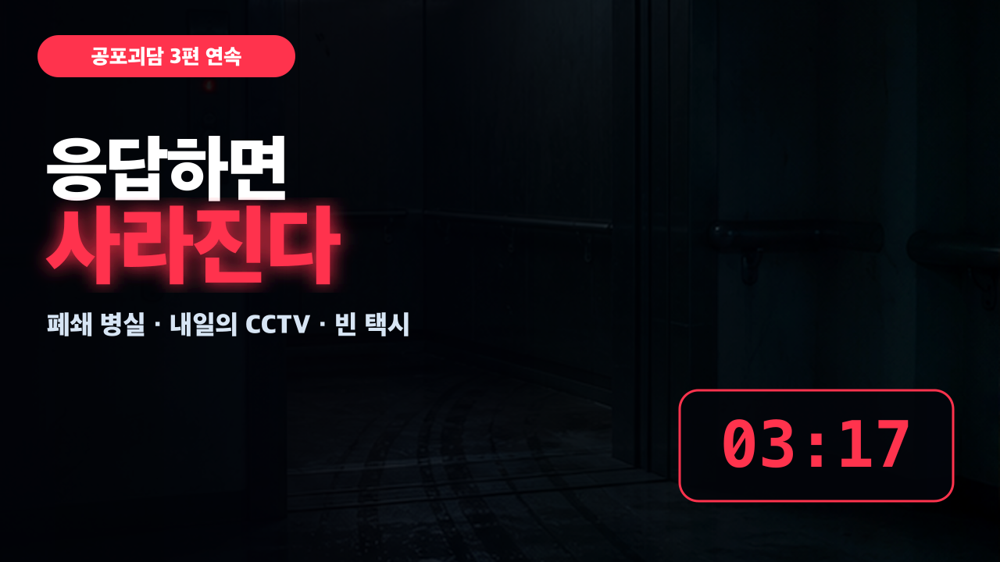
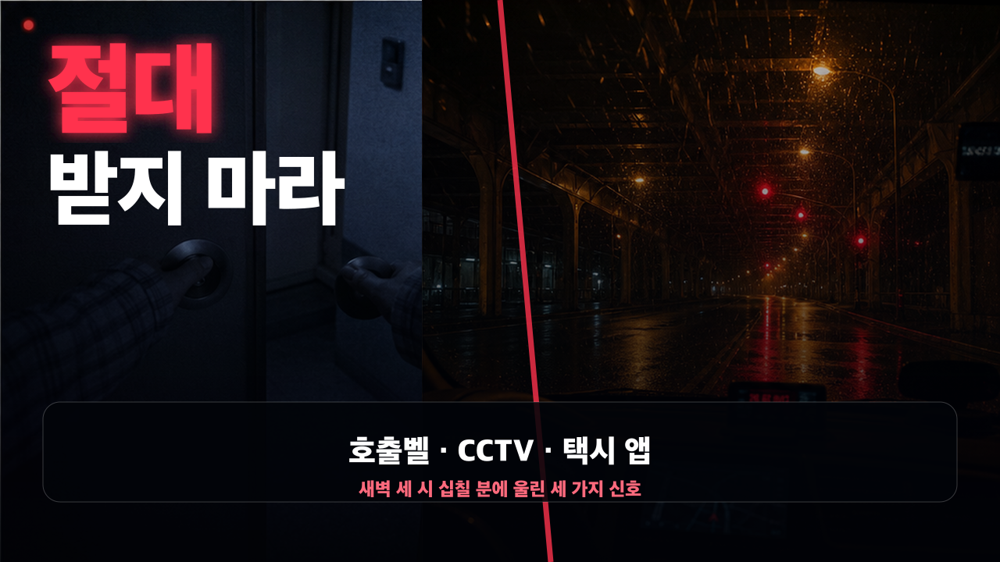

YouTube Publish Kit
새벽 3시 17분 · 공포괴담 3편
제목, 설명, 태그, 고정 댓글과 SNS 홍보문을 이 화면에서 바로 복사할 수 있습니다.
Publishing Strategy
이번 게시 전략
최종 권장: 2026년 8월 28일 금요일 21:30 KST · 일반 예약 공개 · 제목/썸네일 테스트 동시 시작
[공개 설정] - 공개 방식: 프리미어가 아닌 일반 예약 공개 - 공개 시각: 2026년 8월 28일 금요일 21:30 KST - 대안 시각: 2026년 8월 29일 토요일 22:00 KST - 업로드 마감: 공개 24시간 전 - 업로드 영상: 2026-013-three-signals-0317-youtube-captioned-story.mp4 - 외부 자막: 2026-013-three-signals-0317-ko.srt - 카테고리: 엔터테인먼트 - 시청자층: 아동용 아님 - 재생목록: 심야 공포괴담 [공개 전후] - T-24시간: 비공개 업로드, 1080p 처리·자막·챕터·저작권 검사 - T-3시간: 커뮤니티와 SNS 예고 - T+5분: 고정 댓글과 SNS 링크 게시 - T+2시간: 재생 오류와 댓글만 확인, 제목·썸네일 성급한 변경 금지 - T+24시간: 홈·추천 CTR, 첫 30초 유지율, 평균 시청시간 확인 - T+72시간: 검색어와 이야기별 이탈 지점 확인 - T+7일: 승리 조합 확정, 후속 Shorts 결정 [영상 요소] - 엔드스크린: 이전 공포 영상 + 심야 공포괴담 재생목록 + 구독 - 카드: 17:37 연결 장면에 이전 공포 영상 1개 - 후속 커뮤니티 투표: 1번 호출벨 / 2번 CCTV / 3번 빈 택시
Main Title
메인 제목
새벽 3시 17분, 절대 응답하면 안 되는 세 가지 신호 | 공포괴담 3편
Alternative Titles
추천 제목 5가지
폐쇄 병실 호출벨·내일의 CCTV·빈 택시…응답한 사람은 사라졌다
새벽 3:17에 울린 세 가지 신호, 받는 순간 기록에서 지워진다
혼자 듣지 마세요: 끝까지 보면 3시 17분이 무서워집니다
404호 호출, 내일의 나, 빈 뒷좌석 | 소름 돋는 공포괴담 3편
절대 문을 열지 마라…새벽 세 시 십칠 분 공포 이야기 모음
Description
설명란
새벽 3시 17분. 폐쇄된 병실에서 호출벨이 울리고, 현관 CCTV에는 내일의 내가 찍혔습니다. 승객이 없는 택시에서는 안전벨트 경고음이 켜졌습니다. 세 사람은 모두 그 신호에 응답했습니다. 그리고 다음 날, 세 사람의 이름은 기록에서 사라졌습니다. 이번 영상은 폐쇄된 404호, 미래를 먼저 보여 주는 현관 CCTV, 빈 뒷좌석에서 시작된 택시 예약까지 세 편의 무서운 이야기를 한 번에 담은 창작 공포괴담 모음입니다. 이어폰을 끼고 불을 끈 뒤 들어 보세요. 다만 새벽 3시 17분에 어떤 신호가 울린다면, 절대 응답하지 마십시오. ⏱ 타임스탬프 00:00 새벽 3시 17분, 세 가지 신호 00:21 첫 번째 이야기 · 폐쇄된 404호 06:36 두 번째 이야기 · 내일의 CCTV 11:38 세 번째 이야기 · 빈 택시의 승객 17:37 세 사건이 하나로 연결되는 순간 18:09 마지막 신호와 엔딩 🎧 영상 구성 - 얼굴 노출 없는 다크 시네마틱 모션 영상 - ElevenLabs Bin 보이스 내레이션 - 승인 BGM cand-04와 새벽 공포 분위기 - 한국어 SRT/VTT 자막 제공 이 영상은 창작 공포 이야기입니다. 등장인물, 장소와 사건은 허구이며 실제 인물이나 사건과 관계가 없습니다. 세 이야기 중 가장 소름 돋았던 신호를 댓글로 남겨 주세요. #공포이야기 #무서운이야기 #괴담
Tags
검색 태그
Pinned Comment
고정 댓글
세 가지 신호 중 여러분이라면 어느 순간에 가장 먼저 도망쳤을까요? 1. 폐쇄된 404호의 호출벨 2. 내일의 내가 찍힌 현관 CCTV 3. 승객이 없는 택시의 안전벨트 경고음 숫자와 이유를 함께 남겨 주세요. 다음 공포괴담 주제 선정에 반영하겠습니다.
Social Promotion
SNS 홍보 문구
오늘 밤 9시 30분, 새벽 3시 17분에만 울리는 세 가지 신호가 공개됩니다. 폐쇄된 404호의 호출벨. 내일의 내가 찍힌 현관 CCTV. 승객이 없는 택시의 안전벨트 경고음. 신호를 확인한 세 사람은 다음 날 기록에서 사라졌습니다. 오늘 밤, 절대 혼자 확인하지 마세요. #공포이야기 #무서운이야기 #괴담
새벽 3시 17분. 폐쇄 병실 호출벨, 내일의 내가 찍힌 CCTV, 승객 없는 택시의 경고음. 세 신호에 응답한 사람은 다음 날 기록에서 사라졌습니다. 공포괴담 3편 연속 보기 → [유튜브 링크] #공포이야기 #괴담
새벽 3시 17분에 신호가 울린다면 절대 응답하지 마세요. 폐쇄된 404호에서 걸려 온 호출, 내일의 내가 찍힌 현관 CCTV, 승객이 없는 택시에서 켜진 안전벨트 경고음. 세 사람은 모두 신호를 확인했고, 다음 날 기록에서 사라졌습니다. 18분 동안 이어지는 창작 공포괴담 3편을 공개했습니다. 여러분이라면 어느 신호에서 가장 먼저 도망쳤을지 댓글로 알려 주세요. 전체 영상 → [유튜브 링크] #공포이야기 #무서운이야기 #공포괴담 #괴담
새벽 3시 17분, 여러분이라면 어떤 신호가 가장 무서웠나요? 1. 폐쇄된 404호의 호출벨 2. 내일의 내가 찍힌 CCTV 3. 승객 없는 택시의 안전벨트 경고음 가장 무서웠던 번호와 이유를 댓글로 남겨 주세요. 가장 많은 선택을 받은 소재는 다음 이야기로 이어갑니다.
Thumbnails
썸네일 2안

A안 · 결과 위협형

B안 · 금지 명령형
Test & Compare
제목·썸네일 테스트 3조합
YouTube Studio에 테스트 및 비교가 보이면 아래 조합을 동시에 등록합니다. 결과는 클릭률만이 아니라 노출당 시청시간을 기준으로 판단하므로 중간에 성급하게 종료하지 않습니다.
조합 1 · 기본
A안
새벽 3시 17분, 절대 응답하면 안 되는 세 가지 신호 | 공포괴담 3편
조합 2 · 결과 위협
B안
응답한 순간 기록에서 사라졌다…새벽 3:17 공포괴담 3편
조합 3 · 소재 명확화
A안
폐쇄된 404호·내일의 CCTV·빈 택시 | 무서운 이야기 3편
Publishing Time
게시 최적화 시간
1순위8월 28일 금요일 21:30
야간 공포 콘텐츠의 분위기와 주말 진입 시간을 함께 노리는 일반 예약 공개입니다.
대안8월 29일 토요일 22:00
YouTube Studio에 시청자 접속 시간 데이터가 있다면 그 시간대를 우선합니다.
| 8월 27일 21:30까지 | 자막본 비공개 업로드, SRT·챕터·엔드스크린·재생목록·저작권 검사 완료 |
|---|---|
| 8월 28일 18:30 | 커뮤니티와 SNS에 3시간 전 예고 |
| 8월 28일 21:30 | 예약 공개 및 제목·썸네일 테스트 시작 |
| 8월 28일 21:35 | 고정 댓글 등록, X·Threads·Instagram 링크 게시 |
| 8월 29일 12:00 | 세 가지 신호 중 가장 무서운 장면 커뮤니티 투표 |
Official References